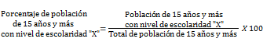
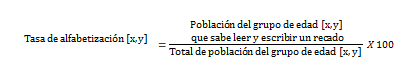
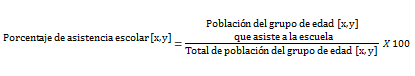
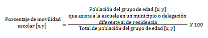

Es la población de 15 años y más por cada nivel de escolaridad respecto al total de la población de 15 años y más, expresada por cada cien.
Donde "X" se refiere a alguno de los siguientes niveles de escolaridad:
Es el cociente de la población que sabe leer y escribir un recado en un grupo de edad específico entre la población en ese grupo de edad, expresado por cada cien.
Los grupos de edad presentados son [15,24] y [25 y más]
Es la población en un grupo de edad específico que asiste actualmente a la escuela respecto al total de la población en ese grupo de edad, expresada po cada cien.
Los grupos de edad presentados son [3,5],[6,11],[12,14],[15,24]
Es la población en un grupo de edad específico que asiste actualmente a la escuela en un municipio o delegación diferente al de residencia respecto al total de la población de ese grupo de edad, expresada por cada cien.
Los grupos de edad presentados son [3,5],[6,11],[12,14],[15,24]
Fuente:INEGI. Encuesta Intercensal 2015.
Nota:Los indicadores presentados son estimadores obtenidos a partir de la Encuesta Intercensal 2015.